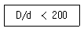

천장크레인운전기능사 (2016-01-24 기출문제)
1과목: 임의 구분
1. 천장크레인 운전실의 종류가 아닌 것은?
- 개방형 운전실
- 개방 단열형 운전실
- 밀폐형 운전실
- 밀폐 단열형 운전실
(정답률: 64%)

2. 천장크레인 크래브 부분의 점검사항으로 틀린 것은?
- 크레인 운전 중 크래브에서 발생하는 소음을 점검 한다.
- 크래브에 설치된 주행장치의 이상 유무를 점검한다.
- 크래브에 부착된 안전난간의 이상 유무를 점검한다.
- 크래브 프레임의 용접부 균열발생 유무를 점검한다.
(정답률: 42%)
3. 국내에서 천장크레인의 공칭 용량 단위는?
- 톤
- 파운드
- 미터
- 온스
(정답률: 90%)
4. 기어의 두 축이 교차하면서 가장 큰 감속비로 감속하는 기어는?
- 웜과 웜 기어
- 나사기어
- 베벨기어
- 랙과 피니언
(정답률: 69%)
5. 콘택트 시그먼트(contact segment)와 핑거(finger)가 접촉하여 직접 전동기를 작동시키는 방식은?
- 컴비네이션 제어기
- 유니버셜 제어기
- 캠형 제어기
- 드럼형 제어기
(정답률: 41%)
6. 권하 속도가 빠를수록 좋은 천장크레인은?
- 원료장입 크레인
- 주기 크레인
- 강괴 크레인
- 담금질 크레인
(정답률: 74%)
7. 홈이 있는 드럼에 와이어로프가 감길 때 와이어로프 방향과 홈 방향과의 각도는 몇 도 이내인가?
- 4
- 8
- 12
- 16
(정답률: 62%)
8. 화물을 권상시킬 때, 작업안전을 위해 급정지시킬 수 있도록 설치되어 있는 일종의 방호장치는?
- 충돌방지장치(Anti collision)
- 비상정지 장치(Emergency stop switch)
- 레일클램프장치(Rail clamp)
- 훅 해지장치(Hook latch)
(정답률: 88%)
9. 크레인에 설치되는 완충장치에 대한 설명으로 옳지i 않은 것은?
- 완충장치는 레일 양 끝단에 설치된 스토퍼에 크레인이 부딪쳤을 때, 충격을 완화시켜 주는 역할을 한다.
- 호이스트나 크래브 트롤리식 스토퍼는 차륜 직경의 1/4미만의 높이로 레일에 용접하어 사용한다.
- 주행 레일의 스토퍼는 차륜 직경의 1/2 이상 높이로 한다.
- 고속크레인에 사용되는 완충장치에는 경질고무 버퍼, 우레탄고무 버퍼, 스프링식 및 유압식이 있다.
(정답률: 62%)
10. 천장크레인의 완성검사 시 시험하중은?
- 정격하중의 100%
- 정격하중의 110%
- 정격하중의 125%
- 정격하중의 150%
(정답률: 77%)
11. 드럼직경 D와 와이어로프 직경(d)의 비율(D/d) 은?
- 5 이하
- 10 이하
- 10 이상
- 20 이상
(정답률: 56%)
12. 디스크 브레이크 시스템에서 제동 시 제동압력은 발생하데 제동이 잘 안 되는 이유와 거리가 먼 것은?
- 디스크 브레이크 오일에 공기가 침투된 상태
- 디스크 브레이크 라이닝에 물이 묻어있는 상태
- 디스크 브레이크 파이프가 파손 되었을 때
- 디스크 브레이크 라이닝에 기름이 묻어있는 상태
(정답률: 49%)
13. 와이어로프 사용상 주의 사항으로 틀린 것은?
- 새로운 로프로 교체 후 초기 운전 시에는 사용정격하중의 1/2정도를 걸고 저속으로 여러 번 시운전을 해야 한다.
- 드럼에 로프를 감을 때에는 가능한 당기면서 감아야한다.
- 로프의 수명을 연장시키려면 적정하중으로 운전횟수를 늘리는 편보다 과하중 횟수를 줄이는 것이 유리하다.
- 징을 매다는 경우에는 4줄걸이 이상으로 한다.
(정답률: 57%)
14. 전자식과부하 방지장치를 설명한 것으로 옳은 것은?
- 내부의 마이크로 스위치를 동작하여 운전 상태를 정지하는 안전장치이다.
- 변화되는 중량을 아날로그로 표시, 편의성을 향상시켰으며 가격도 저렴하다.
- 스트레인 게이지의 전자식 저항값의 변화에 따라 아주 민감하게 동작하는 방호장치이다.
- 감지방법은 하중의 방향에 따라 인장로드셀 방법, 압축로 드셀 방법이 있다.
(정답률: 40%)
15. 전자 브레이크의 전자석이 소리를 내며 과열, 소손되는 경우 점검 사항과 관계가 없는 것은?
- 압출봉 출입구 패킹부에서 물이 침입하여 내부에 녹이 발생하여 있지 않은가
- 풀리와 라이닝의 틈새가 너무 적지 않은가
- 스트로크가 너무 크지 않은가
- 브레이크 라이닝이 과열 하였는가
(정답률: 45%)
16. 전동기의 일반적인 사항을 설명한 것으로 틀린 것은?
- 분권식의 경우 부하변동에 관계없이 일정한 속도로 운전된다.
- 브러시와 홀더는 예비부품으로 준비해둘 필요가 있다.
- 카본 브러시의 마모한도는 원래치수의 20%까지 이다.
- 모터의 전원전압이 너무 낮아도 과열된다.
(정답률: 41%)
17. 훅에 대한 설명 중 틀린 것은?
- 목 부분이 30% 이내 벌어진 것까지만 사용한다.
- 균열 검사는 적어도 년 1회 실시한다.
- 흠 자국 깊이가 2㎜가 되면 평활하게 다듬어야 한다.
- 균열된 훅은 용접해서 사용할 수 없다.
(정답률: 66%)
18. 주행 차륜의 직경이 400이고, 주행 모터의 회전수가 3000rpm이며, 감속비가 1/100일 때, 주행속도는?
- 약 38m/min
- 약 68m/min
- 약 120m/min
- 약 80m/min
(정답률: 36%)
19. 천장크레인의 안전장치가 아닌 것은?
- 리미트 스위치
- 전자 브레이크
- 과부하 계전기
- 전동기
(정답률: 84%)
20. 권선형 유도 전동기의 2차 저항 제어 방식의 특징으로 틀린 것은?
- 1차 저항값의 가변에 의해 속도가 제어된다.
- 어떤 용량의 전동기에도 제어가 가능하다.
- 기동 시 쿠션 스타트로서도 사용된다.
- 부하 변동에 의한 속도 변동이 크다.
(정답률: 43%)
2과목: 임의 구분
21. 스퍼기어에서 잇수가 18개인 피니언이 1000rpm음로 회전하고 있다. 기어를 450rpm으로 회전시키려면 기어의 잇수는 몇 개로 하여야 되는가?
- 40
- 70
- 150
- 250
(정답률: 49%)
22. 집전장치의 종류 중 대전류용 또는 고압용이며 해일과 접촉하는 위쪽 접촉부위가 마모를 경감시키도록 되어있는 형식은?
- 슈 형
- 고정 형
- 포올 형
- 팬던트 형
(정답률: 53%)
23. 권복하중 40톤, 권상속도 15m/min인 천장크레인의 전동기의 출력(kW)은?
- 58.8
- 588
- 13.3
- 9.8
(정답률: 33%)
24. 미끄럼 베어링에 대한 설명 중 틀린 것은?
- 구조가 간단하고 값이 싸다.
- 충격에 견디는 힘이 작다.
- 베어링 교환이 간단하다.
- 시동 저항이 크다.
(정답률: 53%)
25. 전동기가 기동을 하지 않는 원인이 아닌 것은?
- 터미널의 이완
- 단선
- 커넥션의 접촉 불량
- 흑의 마모
(정답률: 67%)
26. 고정자, 회전자, 베어링, 냉각팬, 엔드 브래킷으로 구성되어 있으며 고정자는 철심과 철심 안쪽에 파진 홈에 감겨있는 권선으로 되어 있는 방식의 전동기는?
- 직권식 전동기
- 농형 유도 전동기
- 권선형 유도 전동기
- 분권식 전동기
(정답률: 36%)
27. 기계요소 중 키(key)에 대한 설명으로 틀린 것은?
- 축과 회전체를 일체로 하여 회전력을 전달시키는 기계요소이다.
- 축과 회전체의 원주방향으로의 이동이 가능 하다.
- 재료는 축 재료보다 약간 강하다.
- 급유할 필요가 없다.
(정답률: 38%)
28. 천장크레인으로 하물을 권상할 때의 운전방법 중 양호한 것은?
- 하물을 조금씩 들어 올리고 그때마다 제어기를 OFF시켜 브레이크 지지능력을 확인한다.
- 천장크레인은 정격하중의 110 %는 들어 올릴 수 있으므로 평소와 같이 권상한다.
- 지면에서 20cm 쯤 위치에서 일단정지하고, 줄걸이 이상 여부를 확인한다.
- 안전을 위하여 권상 작업을 하지 않는다.
(정답률: 76%)
29. 운전 시 집전장치에서 과대한 스파크가 발생할 때 점검해야 할 사항은?
- 집전자의 과대 마모에 의한 접촉 불량
- 전동기 회전수
- 브레이크 라이닝 간격
- 리미트 스위치
(정답률: 68%)
30. 천장크레인으로 물건을 운반할 때 주의 할 사항 중 거리가 먼 것은?
- 적재물이 떨어지지 않도록 한다.
- 부하물 위에 사람을 태워서는 안 된다.
- 경우에 따라서는 과부하 하중 이상의 무게를 매달을 수 있다.
- 줄걸이 와이어로프의 안전 여부를 항상 확인 한다.
(정답률: 90%)
31. 천장크레인으로 부품을 들어 올릴 때 주로 사용하는 볼트는?
- 기초볼트
- 아이볼트
- T 볼트
- 스테이볼트
(정답률: 66%)
32. 천장크레인 관련 설명 중 틀린 것은?
- 저항기는 사용 중 온도가 높아져서 약 350°C가 될 때가 있으므로 통풍을 잘 시켜야 된다.
- 리미트 스위치를 구조별로 구분하면 나사형, 레버형, 캠형으로 나눌 수 있다.
- 리미트 스위치의 작용점이 최대부하 때와 무부하 때에는 약간씩 차이가 난다.
- 천장크레인용 저항기는 용량이 크고 진동에 강한 리본형이 적합하다.
(정답률: 45%)
33. 전기설비의 감전 대책이 아닌 것은?
- 정전 또는 점검 수리 시에는 반드시 전원스위치를 내리고 다른 사람이 스위치를 넣지 않게 수리중 표시를 한다.
- 감전사고 방지를 위한 장치에는 접지, 누전차단기 등이 있다.
- 작업장에서 직류와 교류 각각 24V 이상인 전기설비에는 접근제한 및 위험 표지를 붙여야 한다.
- 복장은 피부가 노출되지 않게 하고 건조한 옷 을 착용하며 절연이 양호한 신발을 신는다.
(정답률: 65%)
34. 크레인의 리모트 콘트롤러에는 주파수방식과 적외선방식이 있다. 이 두 가지 방식의 특성 중 틀린 것은?
- 주파수방식은 운전자의 가시거리 내에 있어야 작동이 가능하다.
- 적외선방식은 주변의 정밀기기에 영향을 주지 않는다.
- 주파수방식은 안테나를 사용하므로 센서가 필요하지 않다.
- 적외선방식은 불필요한 신호에 의한 사고위험 이 주파수 방식보다 낮다.
(정답률: 46%)
35. 하역 작업을 시작하기 전에 점검해야 할 사항 중 가장 거리가 먼 것은?
- 주행로상 및 크레인 주위에 장애물 유무 여부
- 급유 상태
- 볼트, 너트 및 엔드 플레이트의 이완 여부
- 진동 및 소음 상태
(정답률: 54%)
36. 플레밍의 오른손 법칙에서 가운데(중지) 손가락 방향은?
- 자력선 방향
- 자밀도 방향
- 유도 기 전력 방향
- 운동 방향
(정답률: 61%)
37. 2개의 축이 일직선상에 있지 않고 어떤 각도를 가진 두 축사이에 동력을 전달할 때 사용하는 축 이음으로서 경사각이 커지면 전달효율이 저하되므로 보통 30° 이내로 사용 하는 축 이음은?
- 분할형 축이음
- 플랙시블 축이음
- 플랜지 축이음
- 유니버셜 조인트
(정답률: 65%)
38. 옥외크레인을 사용 시 순간풍속이 매초 당 ( ) 미터를 초과하는 바람이 불어올 우려가 있을 때에는 옥외에 설치되어 있는 주행크레인에 대하여 이탈방지장치를 작동시키는 능그 이난 을 방지하기 위한 조치를 하여야 한다. ( )에 적합한 풍속은?
- 20
- 30
- 45
- 60
(정답률: 57%)
39. 집중 급유장치로 급유가 불가능한 부분은?
- 주행 장축 베어링
- 주행 차륜 베어링
- 와이어 드럼 축수
- 훅 시브 베어링
(정답률: 43%)
40. 급유 방법에 대한 설명 중 가장 거리가 먼 것은?
- 와이어로프용 윤활유는 산이나 알칼리성을 띠지 않고, 내산화성이 커야 한다.
- 진동이 심하고 먼지가 많은 개방된 곳의 기어에는 그리스를 발라주는 것이 좋다.
- 감속기어 오일은 여름철에는 점도가 높은 것을 겨울철에는 점도가 낮은 것을 사용한다.
- 스팬이 긴 경우 사행으로 인한 마모가 크므로 레일 측면에 기름이 부착되어서는 안 된다.
(정답률: 49%)
3과목: 임의 구분
41. 와이어로프의 안전율 계산 시 사용하는 절단하중은 우리나라에서는 어떤 규정을 적용하는가?
- KS A 3514
- KS B 3514
- KS C 3514
- KS D 3514
(정답률: 61%)
42. 와이어로프의 지름감소가 공칭지름의 ( )할 경우 사용해서는 아니 된다. 괄호 안에 알맞은 것은?
- 7%를 초과
- 9%를 초과
- 10%를 초과
- 12%를 초과
(정답률: 61%)
43. 천장크레인의 주행차륜의 마모한계에 대한 설명 중 틀린 것은?
- 좌우차륜의 직 경차 : 구동륜은 원치수의 0.2%, 종동륜은 원치수의 0.5%
- 플랜지의 두께 : 원치수의 50%
- 플랜지의 변형도 : 수선에서 20°
- 차륜직경의 마모 : 원치수의 3%
(정답률: 41%)
44. 와이어로프의 구부림과 관련 된 사항 중 쉬이브 지름 D와 와이어 소선지름 d와의 관계가 아래와 같을 때 의미하는 것은?

- 영구늘어남이 생겨 빨리 피로해진다.
- 최적치 이다.
- 필요한 최소한도를 만족한다.
- 탄성변형 내에 존재한다.
(정답률: 50%)
45. 체적이 같을 때、무거운 것부터 차례로 나열한 것을?
- 동→납→점토→철
- 점토→납→동→철
- 철→동→납→점토
- 납→동→철→점토
(정답률: 65%)
46. 타워크레인에서 일반적인 작업사항으로 틀린 것은?
- 작업이 종료된 후 훅(Hook)은 크레인 메인 지브의 하단부 정도까지 올려놓는다.
- 물건을 운반하지 않을 때는 훅에 와이어를 건채로 이동해서는 안된다.
- 모가 난 짐을 운반 시는 규정보다 약한 와이어를 사용한다.
- 화물의 중량 및 중심의 목측(木測)은 가능한 정확히 해야 한다.
(정답률: 84%)
47. 와이어로프의 보관 방법 중 틀린 것은?
- 건조하고 지붕이 있는 곳에 보관해야 한다.
- 한번 사용한 로프를 보관할 때는 오물 등을 제거하고 그리스를 바르고 잘 감아서 보관해야 한다.
- 로프는 적당한 습기가 필요하므로 충분한 습기가 올라오는 장소에 놓는다.
- 직사광선이나 열기 등에 의한 그리스의 변질이 없도록 보관해야 한다.
(정답률: 80%)
48. 걸이 로프에 걸리는 하중에 관한 공식 중 을/은 것은?
- 부하물의 하중 ÷ (줄걸이수 ÷ 조각도)
- 부하물의 하중 ÷ (줄걸이수 × 조각도)
- 부하물의 하중 × (줄걸이수 ÷ 조각도)
- 부하물의 하중 × (줄걸이수 × 조각도)
(정답률: 65%)
49. 100V로 150A의 전류를 흐르게 하였을 경우 마력은 약 얼마 인가?
- 10.11
- 20.11
- 30.11
- 40.11
(정답률: 48%)
50. 줄걸이로 짐을 달아 올릴 때의 주의사항 중 틀린 것은?
- 매다는 각도는 60도 이내로 한다.
- 큰 짐 위에 작은 짐을 얹어서 짐이 떨어지지 않도록 한다.
- 짐을 전도시킬 때는 가급적 주위를 넓게 하여 실시한다.
- 전도 작업 도중 중심이 달라질 때는 와이어로프 등이 미끄러지지 않도록 주의한다.
(정답률: 69%)
51. 안전작업 사항으로 잘못된 것은?
- 전기장치는 접지를 하고 이동식 전기기구는 방호장치를 설치한다.
- 엔진에서 배출되는 일산화탄소에 대비한 통풍장치를 설치한다.
- 담뱃불은 발화력이 약하므로 제한 장소 없이 흡연해도 무방하다.
- 주요장비 등은 조작자를 지정하여 아무나 조작하지 않도록 한다.
(정답률: 88%)
52. 전장품을 안전하게 보호하는 퓨즈의 사용법으로 틀린 것은?
- 퓨즈가 없으면 임시로 철사를 감아서 사용한다.
- 회로에 맞는 전류 용량의 퓨즈를 사용한다.
- 오래되어 산화된 퓨즈는 미리 교환한다.
- 과열되어 끊어진 퓨즈는 과열된 원인을 먼저 수리한다.
(정답률: 84%)
53. 다음 중 현장에서 작업자가 작업 안전상 꼭 알아두어야 할 사항은?
- 장비의 가격
- 종업원의 작업환경
- 종업원의 기술 정도
- 안전 규칙 및 수칙
(정답률: 81%)
54. 망치(hammer) 작업 시 옳은 것은?
- 망치자루의 가운데 부분을 잡아 놓치지 않도록 할 것
- 손은 다치지 않게 장갑을 착용할 것
- 타격할 때 처음과 마지막에 힘을 많이 가하지 말 것
- 열처리된 재료는 반드시 해머작업을 할 것
(정답률: 49%)
55. 아크용접에서 눈을 보호하기 위한 보안경으로 맞는 것은?
- 도수 안경
- 방진 안경
- 차광용 안경
- 실험실용 안경
(정답률: 83%)
56. 먼지가 많은 장소에서 착용하여야 하는 마스크는?
- 방독 마스크
- 산소 마스크
- 방진 마스크
- 일반 마스크
(정답률: 85%)
57. 유류화재 시 소화용으로 가장 거리가 먼 것은?
- 물
- 소화기
- 모래
- 흙
(정답률: 84%)
58. 작업장에서 공동 작업으로 물건을 들어 이동할 때 잘못된 것은?
- 힘의 균형을 유지하여 이동 할 것
- 불안전한 물건은 드는 방법에 주의할 것
- 보조를 맞추어 들도록 할 것
- 운반도중 상대방에게 무리하게 힘을 가할 것
(정답률: 85%)
59. 산업체에서 안전을 지킴으로서 얻을 수 있는 이점과 가장 거리가 먼 것은?
- 직장의 신뢰도를 높여준다.
- 직장 상·하 동료 간 인간관계 개선 효과도 기대된다.
- 기업의 투자 경비가 늘어난다.
- 사내 안전수칙이 준수되어 질서유지가 실현 된다.
(정답률: 86%)
60. 정비작업 시 안전에 위배 되는 것은?
- 깨끗하고 먼지가 없는 작업환경을 조성한다.
- 회전 부분에 옷이나 손이 닿지 않도록 한다.
- 연료를 채운 상태에서 연료통을 용접한다.
- 가연성 물질을 취급 시 소화기를 준비한다.
(정답률: 88%)